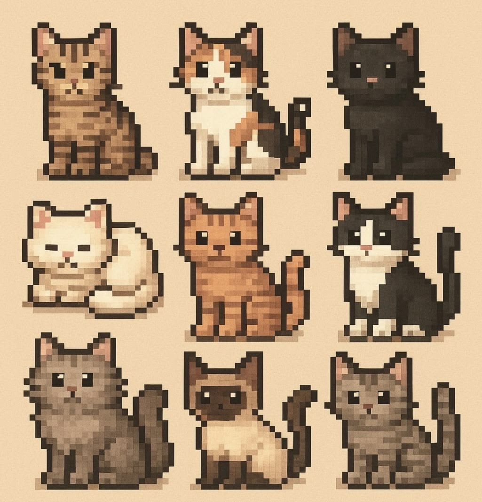
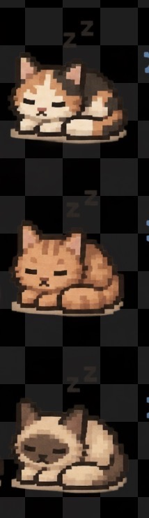
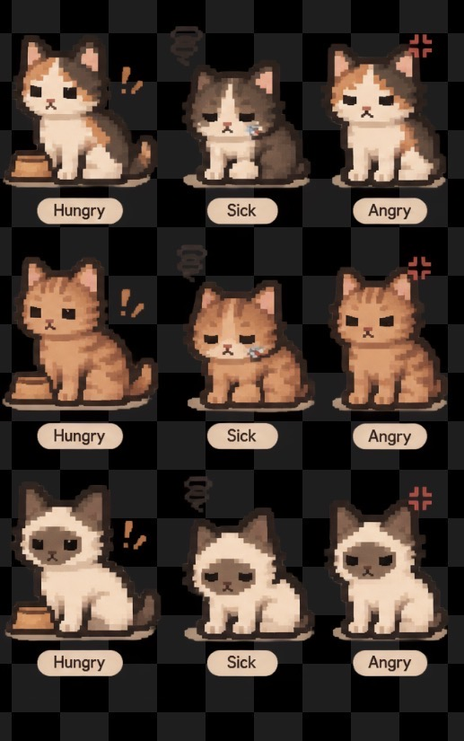
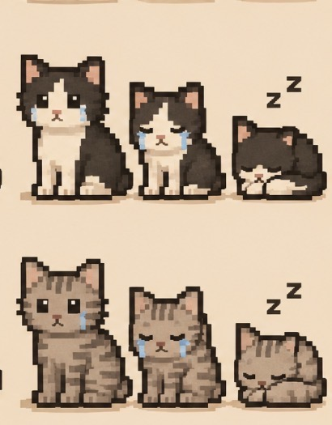
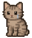
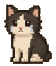

| sit — сидит | sleep — спит, Zzz | hungry — миска и «!» | sad — слёзы | sad, вариант 2 — слёзы | angry — знак злости | |
|---|---|---|---|---|---|---|
| Рыжий |   кадр sit · 56×66 px |   кадр sleep · 56×66 px |   кадр hungry · 56×66 px | Нет в референсахдля этого окраса такой позы на картинках нет | Нет в референсахдля этого окраса такой позы на картинках нет |  кадр angry · 56×66 px |
| Трёхцветный |  кадр sit · 56×66 px |  кадр sleep · 56×66 px |  кадр hungry · 56×66 px | Нет в референсахдля этого окраса такой позы на картинках нет | Нет в референсахдля этого окраса такой позы на картинках нет |  кадр angry · 56×66 px |
| Серый полосатый |  кадр sit · 56×66 px |   кадр sleep · 56×66 px | Нет в референсахдля этого окраса такой позы на картинках нет |  кадр sad · 56×66 px |  кадр sad2 · 56×66 px | Нет в референсахдля этого окраса такой позы на картинках нет |
| Чёрно-белый |  кадр sit · 56×66 px |  кадр sleep · 56×66 px | Нет в референсахдля этого окраса такой позы на картинках нет |  кадр sad · 56×66 px |  кадр sad2 · 56×66 px | Нет в референсахдля этого окраса такой позы на картинках нет |